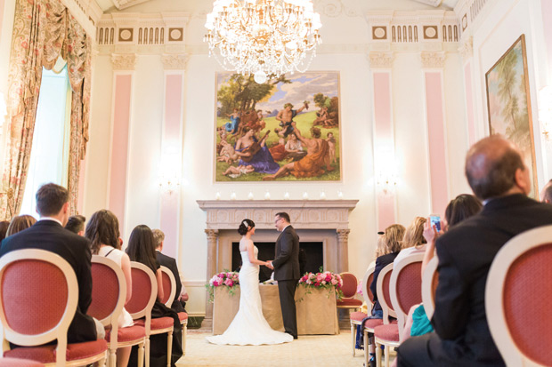
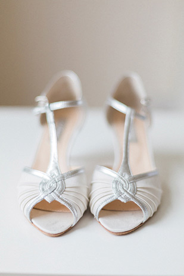
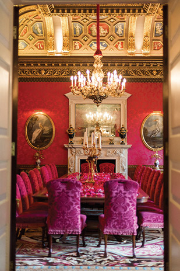
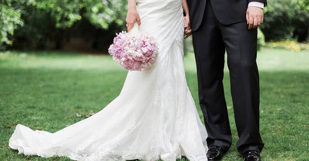

Weddings
Ritz Wedding Photography
29 June 2015
Just a few weekends ago I had the pleasure of photographing a beautiful and luxurious wedding at the London Ritz. I’ve worked with these two before and I knew I was in for a treat when they asked me to be their wedding photographer–in addition to being an incredibly lovely couple, the bride is absolutely stunning and she happens to have impeccable taste!
The sophisticated elegance of the venue was balanced by a playful and relaxed palate of pink peonies and many sweet details such as macaroon escort cards for the guests. The bride adorned gorgeous custom handmade Hermione Harbutt earrings and two pairs of shoes that tied the pink palette together. In addition to formal wedding portraits inside the Ritz, we snuck outside into St.
James Park for a few more natural and relaxed images, and then later on in the night onto the busy street in front of the Ritz to create images with more of an urban feel. It was a small but sentimental and intimate event–during each speeches given during the night there was not a dry eye in the room (including my own!).
I feel so lucky and honored to have been able to document the wedding for this wonderful couple as their wedding photographer. And a special thanks to my second shooter Jude Middleton and to Ayshea Donaldson of My London Wedding Planner for planning such a gorgeous event!



